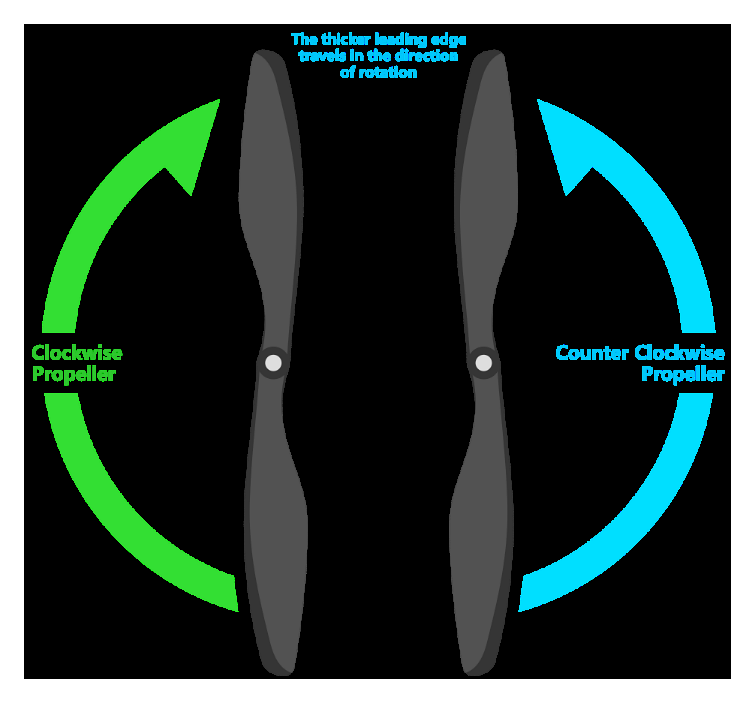

Task 12: Mount the propellers
Install the correct CW and CCW propellers only after motor test and software setup are complete.
Day 5–6See blockers below
Task 12: Mount the propellers
Install the correct CW and CCW propellers only after motor test and software setup are complete.
Blockers
Complete these tasks first before you start this page.
Not marked complete

Motor directions after the motor-test task.

Use this figure to distinguish clockwise and counter-clockwise propellers.
Parts required
- Vehicle with motors tested
- Gemfan LR 7035 2-blade propellers
- Four propeller nuts
Tools required
- M8 nut driver
Steps
- Remove the four propellers and the four propeller nuts from the propeller bag.
- Identify CW and CCW propellers with the label side facing upward. The thicker leading edge travels in the direction of rotation.
- Match each propeller to the correct motor based on the verified motor directions from the motor-test task.
- Seat each propeller fully on the motor shaft.
- Thread the propeller nut on by hand first, then snug it with the M8 nut driver.
- Check that every propeller sits flat with no wobble or play.
STOP! Before the first powered run with propellers installed, ask for a faculty member to verify propeller orientation and motor-to-propeller matching.
Common errors
- Installing the propeller upside down with the label facing down.
- Putting a CW propeller on a CCW motor or vice versa.
- Not seating the propeller fully before tightening the nut.
- Overtightening and cracking the propeller hub.
- Leaving a propeller nut only finger-tight.